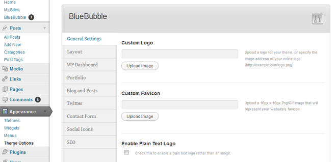
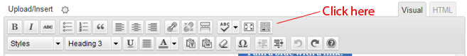
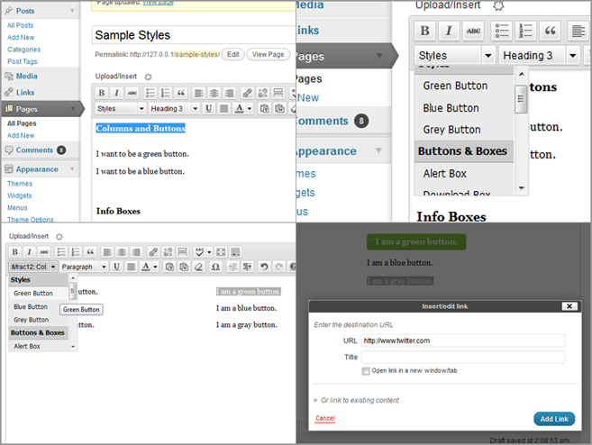

Creado: 5 abril,
2012
Por: imaginalgo
Apoyo: Foro para BlueBubble
Gracias por tu interés en BlueBubble para Wordpress. Aprovecha varias funciones de Wordpress 3.0 como: MultiSitios, Encabezados Personalizados, y el nuevo sistema de navegación. Todo esto mientras conservando el estilo original de las versions anteriores. Fácil instalar y fácil usar – ojalá que te guste.
Lo siguiente es una lista de cambios, reparaciones y novedades en versión. 3.5.5:
As of version 3.5.5, avisos de actualización de Tema aparecen en Aparencia > Temas, donde se activa el tema.
Gracias por tu interés en BlueBubble para Wordpress. Este theme ha sido numerado 3.0 po su compatibilidad con Wordpress 3.0. Aprovecha varias funciones de Wordpress 3.0 como: MultiSitios, Encabezados Personalizados, y el nuevo sistema de navegación. Esta funcionalidad ya está incluida y no es necesario cambiar nada en el documento functions.php.
Además, hay varias cosas nuevas en esta versión, como: un Panel de Control con muchas opciones, 7 combinaciones de colores, un Lightbox para los artículos en el portafolio, la capacidad de mandar a Twitter cualquiera publicación y una sección con datos del autor con sus publicaciones.
Todo esto mientras conservando el estilo original de las versions anteriores. Fácil instalar y fácil usar – ojalá que te guste.
Sinceramente,
Thomas Veit y Mike Walsh
El proceso de instalación ahora es
automático en versión 3.5! Cuando por primera vez activas el Theme, las
páginas Blog,
Portafolio, and Contacto
se crearán automáticamente, además de los menús Main,
Top, Footer y 404!
Se puede saltar ls pasos que siguen y simplemente ir ala página Ajustes
> Lectura y elige Portafolio como la página
inicial. NO NO NO cambies la página de
entradas. Ahora sigue a la Opciones
de BlueBubble.
Sin embargo, si tienes un problema, lee el siguiente:
First, make sure that you have Wordpress 3.0 or later installed. After installing Wordpress on your server, upload or copy the bluebubble folder to the wp-contents/themes directory. Once this is done...
El Panel de Opciones ha sido cambiado y rediseñado para versión 3.3. Las mismas opciones aún están presentes, y también encontrarás varias nuevas. Aquí es lo que verás:
Each option has a detailed explanation. Some new options in BlueBubble 3.5 include:
Como el proceso de crear las páginas y
menús en este versión de BlueBubble es automático, la mayoría de lo que
sigue ya no es necesario. Sin embargo, se quedará para referencia, si
tal vez sean necesarios.
Para establecer el Portafolio, vaya a Theme
Options > Portafolio y elegir la categoría que
deseas usar para el Portafolio. Luego, vaya a Theme Options >Blog and
Entradas y elielegir la categoría que deseas usar para el Blog.
Después puedes continuar a la sección, Actualización del Tema y Enlaces Sociales.
Esta sección es bastante simple. ¿Recuerdes cuando creaste la página Portada y las categorías en sección 2.5? Si hiciste esto, se van a aparecer en los menús aquí. Aquí se conectan las páginas hechas en secciones 2.2 y 2.3 con las categorías en sección 2.5.
La casilla es muy fácil de entender – si no quieres que te dejen comentarios, marca la casilla. (Nota: Este no afectará la sección de Blog)
Si no quieres que las visitantes dejen comentarios en las páginas del portafolio, marcar la opción que se encuentre aquí. (Nota: Esta opción no afecta los comentarios en la sección del Blog)
Se puede indicar también cuantos artículos necesitan por página. Si no escribes nada, cada página de la sección del portafolio mostrará 6 artículos y automáticamente creará más páginas si existen más que 6 artículos.
BlueBubble ahora está en GitHub! El tema ahora te avisará cuando hay disponible una nieva versión. Además, si ya tienes la versión más nueva, puedes volver a todas las versiones anteriores - directamente desde el Escritorio de Administración de Wordpress!
En el archivo de BlueBubble hay una carpeta llamada plugins. Debes copiar los contenidos a la carpeta de plugins en tu instalación de Wordpress. Si tienes una sola instalación de Wordpress, se activará automaticamente. Sin embargo, si tienes Multisitio, necesitará activar el Theme Update plugin desde el Escritorio del Network Admin.
Debajo de la pestaña Twitter en Opciones de Tema, se puede pinchar Icones Social. Si quieres ingresar un enlace a un sitio social, como Twitter, sigue estas instrucciones:
Ahora hay 2 opciones nuevas aquí en BlueBubble 3.5: Google+ y Dribble
Hay apoyo para los siguientes sitios: Google+, Dribble, Facebook, Twitter, LinkedIn, Delicious, Digg, DeviantArt, MySpace, Evernote, Flickr, Netvibes, Orkut, Reddit, ShareThis, StumbleUpon, Technorati, y Tumblr.
En versiones anteriores de BlueBubble, se podía crear Botones y cuadros de Alerta, Información, Ideas or Descargar utilizando Código Corto. El único problema con esto es si el usuario luego cambió el Theme de BlueBubble a otro, se quedaron los códigos [shortcode][/shortcode].
Hay verios nuevos estilos de boton en versión 3.5.5 de BlueBubble, gracias al diseñador Orman Clark.
In BlueBubble 3.5, lo que está de moda son precisamente los Códigos Cortos. Pero aquí se van en favor a Styles. Este cambio te permite a crear los Botones y cuadros de Alerta, Información, Ideas or Descargar como antes, pero sin el [shortcode][/shortcode] feo e innecesario. Además hay un botón nuevo - Gris y ahora también se puede establecer columnas dentro de una página o entrada. A lo breve se explica aquí:
Primero necesitas crear una nueva Entrada. En eleditor hay una linea de botones así:
Si solo veas una linea de botones, debes pinchar el último - Ver/Ocultar Botones Adicionales - para mostrar la segunda lnea. El primer menú se llama Styles.
Si te gustaría crear un botón por ejemplo, primero destacar el texto en el editor. Luego, pincha el menú desplegable Styles y elige el color del botón que quieres. Automaticamente se aplicará los estilos. Después, se puede colocar un enlace a un lugar en el botón!
Además de las opciones ya mencionadas, hay otras opciones que ayudan a mejorar tu experiencia con el theme BlueBubble.
Logo Personalizado: Para reemplazar el log de BlueBubble con tu propio, carga un logo desde la opción Media, copia la dirección URL y pegarla en este campo.
Favicon Personalizado: Mismo proceso como el anterior. Nota – el Favicon debe ser en formato .ico, aunque algunos navegadores también utilizan .png.
Favicon Personalizado: Mismo proceso como el anterior. Nota – el Favicon debe ser en formato .ico, aunque algunos navegadores también utilizan .png.
Campos del Usuario Personalizados: BlueBubble ha agregado unos campos nuevos a los que vienen por omisión en Wordpress.
Perfil del Autor: Desde la sección del Blog uno se puede apretar el nombre del autor par aver una sección aparte que contiene la información del perfil del autor y una lista de su publicaciones.
Foto del Autor Personalizada: Es possible usar un Plugin de Wordpress para permitir que usuarios cargan sus propias fotos de perfil, pero hay otra manera también. Carga una foto a la carpeta wp-content/themes/BlueBubble/images/authors/ con el mismo nombre como tu número de usuario, y en formato .jpg Por ejemplo, el administrador, quien tiene un número de usuario 1 cargaría el imagen 1.jpg. EL tamaño ideal del imagen es 100x100.
Si ya seguiste las instrucciones anteriores, es súper fácil agregar un artículo al portafolio. Mire:
Si tienes dificultades o problemas con el portafolio o blog, favor de leer el document de ayuda correspondiente que vino con el theme.
Está sección tiene algunas de las preguntas más frecuentes que recibo. Por favor lea esta sección antes de preguntar algo ya contestado aquí!
Fue muy entretenido trabajar con este theme y agregar nuevas funciones a un theme ya conocido como simplemente maravilloso. Pero no pudiera hacerlo con my propio fuerza y conocimiento. Por eso, quiero agradecer las siguientes Fuentes de ayuda e inspiración:
De nuevo muchas gracias por descargar y usar este theme. Debes sentirte libre hacer cualquier consulta en el Foro de apoyo BlueBubble.
imaginalgo